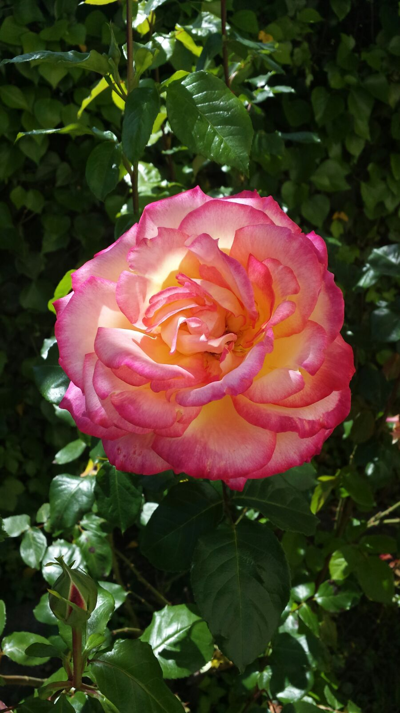
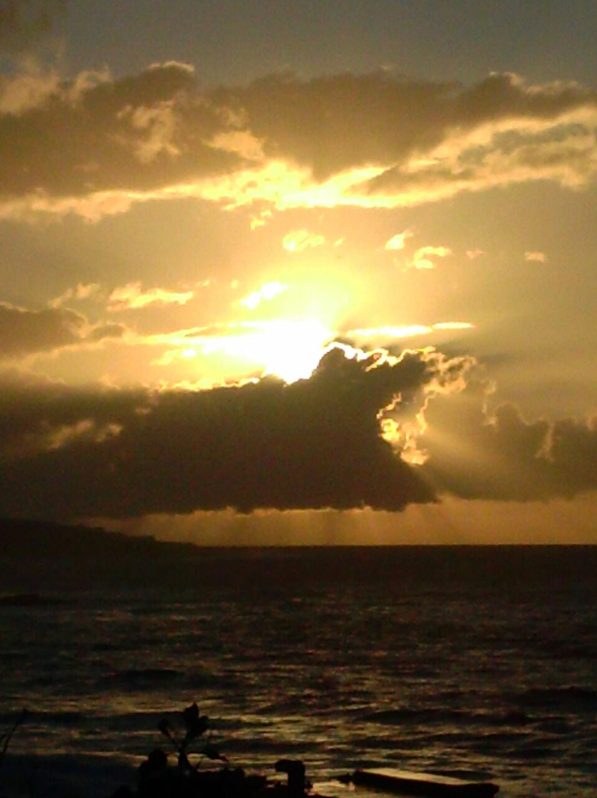
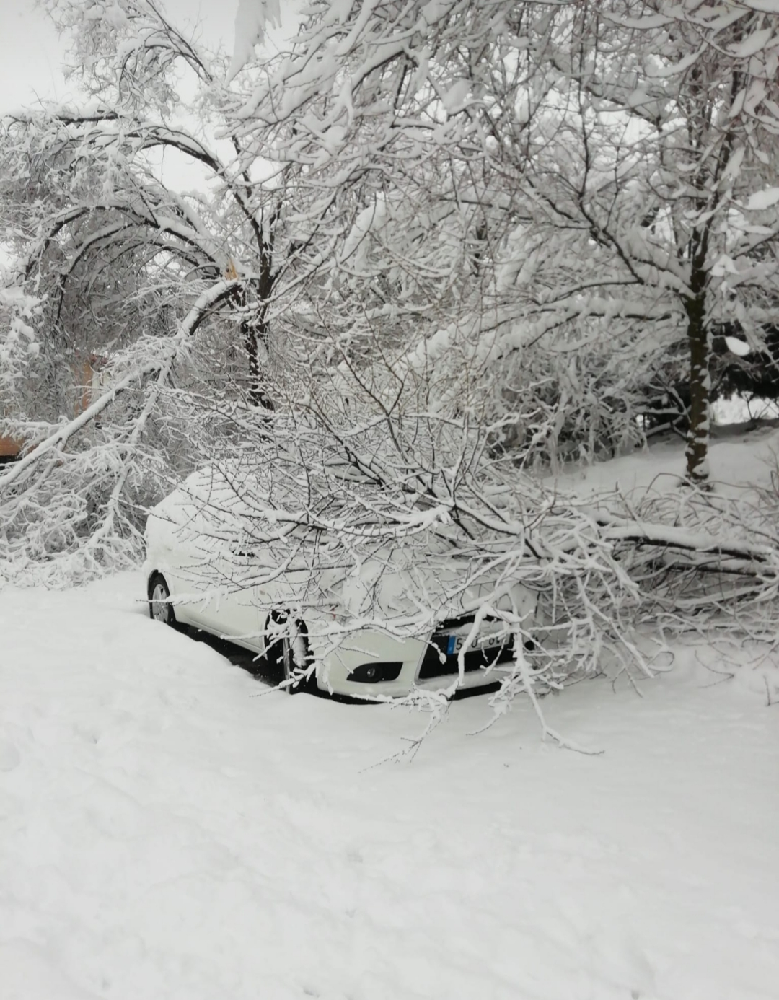
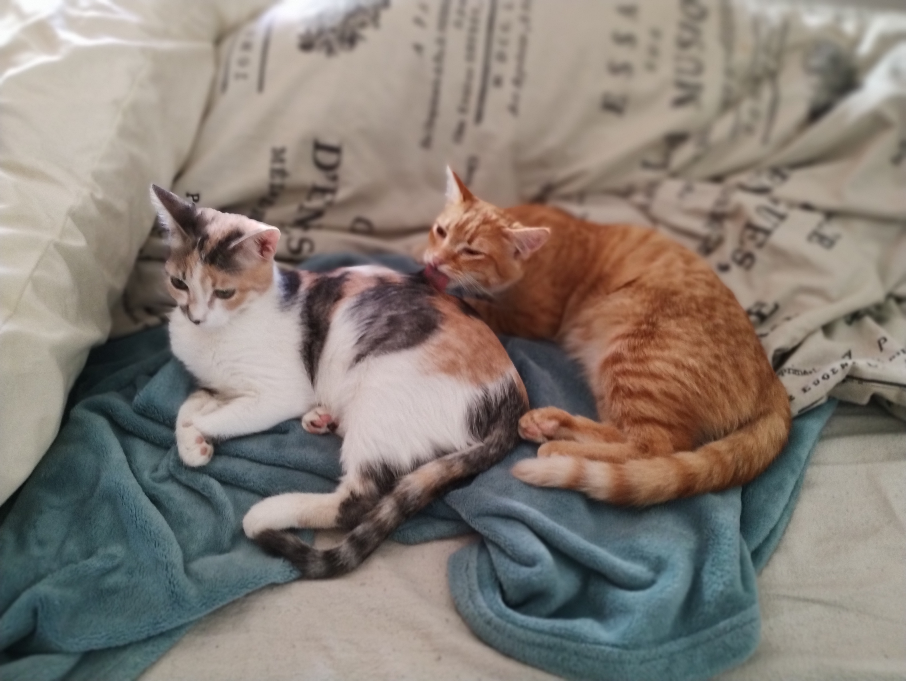
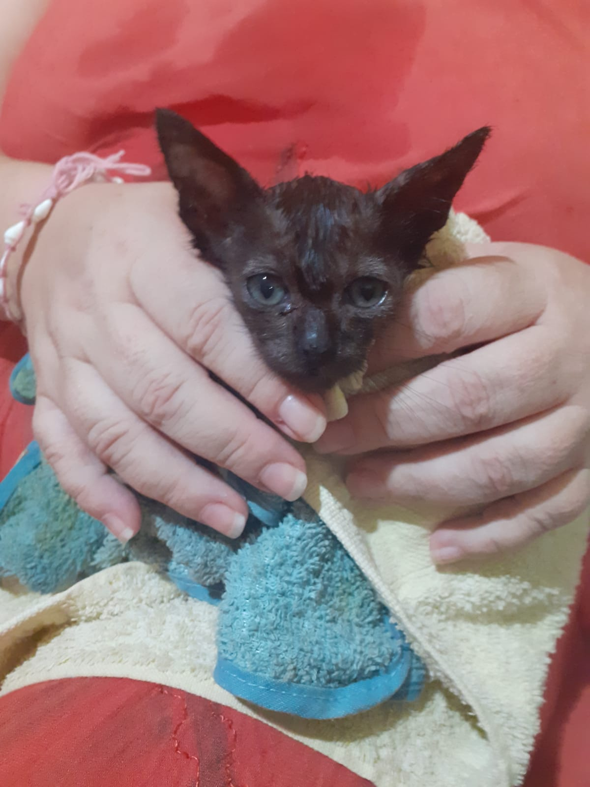

Flores y naturaleza
Ideas para conectar con la naturaleza.
En esta web te ofrecemos una amplia selección de imágenes que abarcan desde la naturaleza hasta la tecnología, pasando por el arte y la cultura. Encuentra inspiración para tus proyectos y descubre nuevas ideas.

Ideas para conectar con la naturaleza.

Lugares para practicar deportes en el mar.

Lugares para practicar deportes en la nieve.
Rompecabezas y puzles para pensar.

Romanticismo en todas las especies.

Cine de terror y fantasía.